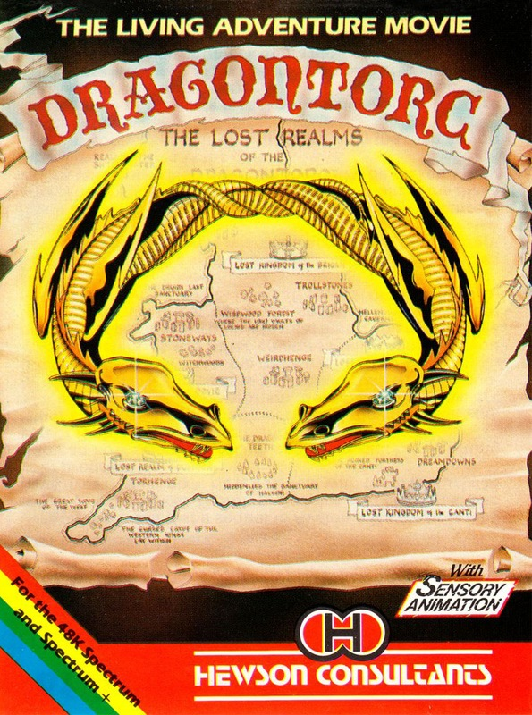
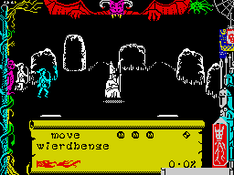
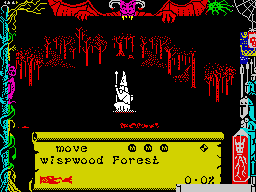

Dragontorc of Avalon


{kind=link}

| Publisher: | Hewson Consultants Ltd |
| Price: | £7.95 |
| Year: | 1985 |
| Source: | CRASH, Issue 16 |

Here is the second adventure movie, The Dragontorc of Avalon. Well yes of course it’s a sequel to Avalon (rev. issue 10) but there are some important changes that should make this a very different game to play. As with Avalon the game comes complete with a map, a code sheet and a fairly exhaustive instruction sheet. The screen effects are the same so the player still needs that degree of arcade skill to direct Maroc and be quick on the draw with a spell. Even the screen surround is similar to Avalon as is the way one invokes spells using the pointer on the scroll, and of course Maroc hasn’t changed a bit, dear old soul.

The Dragontorc story is different to that of Avalon so to help set the scene, a little tale... Many years ago this land was ruled by Bran. Now he was a realistic sort of chap who knew that one day he would die, which would leave his only son and heir as ruler. Bran’s son could be generously described as a spoilt wimp, the sort of chap that drives around pub car parks in Dad’s Porsche (not in those days, of course, the pubs didn’t have car parks). To make his son a strong and mighty leader Bran sought the power of magic and bade the Lords of Lore to make The Dragontorc. This was to be an awesome thing, so great were its powers that even a C5 would pale into insignificance. But power such as this went straight to the young wimp’s head and after Bran’s death he used the power for evil, not for good. Eventually the Lords of Lore managed to recover the Torc, but they dared not destroy it lest the power of magic itself fade, instead they forged five crowns which they scattered across the kingdom. Now the Torc is harmless, until the five crowns are joined together again. Enter Morag the Shape-shifter, she yearned for the power of the Torc and used her evil on the Kings of the land so while they warred with each other she could steal the five crowns and inherit its terrible power. Morag has already managed to get the Crown of Dumnovia. Only Maroc can thwart her plans and only he with the help of Merlyn, Maroc’s old tutor and prisoner of Morag. Merlyn’s first advice ‘seek the Ley Rod....’

Essentially the game is played in exactly the same way as Avalon. Maroc has a small collection of spells which he may add to as he progresses, but this time he starts with the ‘Bane’ and ‘Servant’ spell as well as ‘Move’. The spells work in the same way as in Avalon, for example ‘Move’ and ‘Unseen’ are background spells and can be used together, this would allow Maroc to be invisible while still exploring. The disadvantage with background spells is that they are a persistent drain on energy. There are some new and more powerful spells hidden away which you will need to deal with the extra nasties that will try to impede your progress.
The game itself is larger, having more locations, more treasures and more dangers. But the most important change of all is that Dragontorc uses a trick called sensory animation. All of the creatures that Maroc meets have lives and characters of their own, some are downright belligerent, while others can be persuaded to support your cause. The importance of this feature will become apparent when the game is played, for Maroc to be successful he must enlist the aid of allies. As a general rule ‘be nice but be quick’. The system of ranking has been slightly changed, instead of having 16 ranks there are now only 8 subdivided as before 8 times.
CRITICISM
‘It is all too easy to condemn a game simply because it looks like the original. Who can blame publishers for continuing to use a successful theme? Lots of people seem to but I don’t think the issue is as simple as that. There comes a time when a well tried system that was once exciting is now positively pedestrian and this is certainly the case with a few recent releases, where you say the graphics are still superb but the story line and objectives are not really different. So have Hewson simply re-vamped Avalon hoping that an eager public will snatch it up regardless? I think perhaps not, Dragontorc has the advantage in that while the graphics made the game excellent in its own right, the story and tasks that the game set were the ultimate challenge. The graphics are the same, the method of play is the same, some of the characters are the same BUT Dragontorc is, in itself, hard and challenging to play. Sensory animation adds greatly to this challenge. Let’s not be rash, if you only enjoyed Avalon for the graphics then there’s nothing really new for you here. But if you enjoyed the challenge of Avalon, relished the puzzles, revelled in the disasters and setbacks, then Dragontorc is for you. Be careful it’s a tough one.’
‘I didn’t actually see Avalon which is a shame because I would have had some idea of what I had let myself in for. When I was given Dragontorc to review, being a simple arcade freak, I can only just appreciate the fantastic qualities of this game. It has excellent graphics that give a slight perspective view, eg paths vanishing into the distance, and its size is enormous. I’ve had Dragontorc for quite a long time and I have hardly reached into the game at all, it took me ages to get out of the first screen but that was because I didn’t read the instructions properly. This game didn’t appeal to me but that’s because I am the sort of person who likes to blast things to kingdom come without having to think too much but I am sure that it will appeal greatly to those of you who enjoy the adventure element.’
‘I thoroughly enjoyed Avalon and Dragontorc looks as if it will surpass that. It’s in the same style as Avalon but rather than having to explore rooms the game is set all over ancient Britain so there’s forests and caves etc to explore. The 3D graphics are well drawn although there is still that flicker but once your eyes get used to it it’s unnoticable. This is a great arcade-adventure with plenty of tasks and challenges. Dragontorc is much more involved than Avalon and is certainly a worthy CRASH SMASH. The author Steve Turner has created his best game yet, exciting, challenging and highly addictive. It’s also pretty damn hard so I shall expect you all to be sending tips to Rob. The save game facility is valuable as is the feature of not going back to square one after a death. An excellent balance of incentive and difficulty.’
COMMENTS
| Control keys: | A-G/Z-V up/down, B or N/M or SS left/right, H-L fire |
| Joystick: | Kempston, AGF or Sinclair 2 |
| Keyboard play: | Responds positively |
| Use of colour: | Superb |
| Graphics: | More scenery changes than Avalon, but generally similar and excellent |
| Sound: | Music is great but there’s little else |
| Skill levels: | N/A |
| Lives: | One cannot die |
| Screens: | Scrolling, over 250 different locations |
| General Rating: | Excellent. |
| Use of Computer: | 85% |
| Graphics: | 94% |
| Playability: | 92% |
| Getting Started: | 85% |
| Addictive Qualities: | 92% |
| Value For Money: | 90% |
| Overall: | 92% |